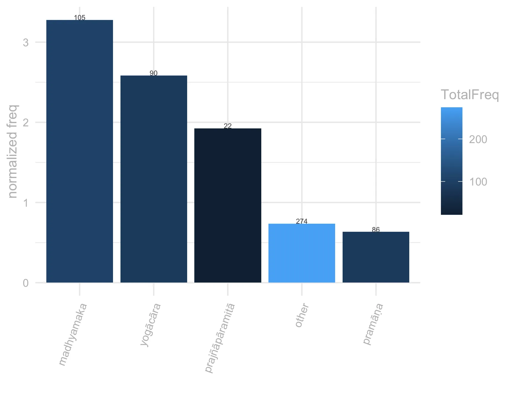

3 prapañca
3.1 overview
karma-kleśa-kṣayān mokṣaḥ karma-kleśā vikalpataḥ / te prapañcāt prapañcas tu śūnyatāyāṃ nirudhyate // iti // Mūlamadhyamakakārikā 18.5 & Prasannapadā, 214 “La délivrance [s’obtient] par l’epuisement des actes et des passions; les actes et les passions [viennent] de la pensée discursive (vikalpa), celle-ci de la différenciation [du réel] (prapañca). Mais [cette] différenciation, dans la vacuité, s’arrête.” [May 223]
3.2 frequency
Frequency and dispersion are calculated over version 1.9 of the ~7-million words Segmented Corpus of Buddhist Sanskrit (10.5281/zenodo.3457822).
Dispersion is calculated with Gries’ deviation of proportion formula (Gries, S. 2008. Dispersion and adjusted frequencies in corpora. International Journal of Corpus Linguistics, 13(4): 403-437)
Frequency and dispersion are calculated over version 1.9 of the ~7-million words Segmented Corpus of Buddhist Sanskrit (10.5281/zenodo.3457822).
Dispersion is calculated with Gries’ deviation of proportion formula (Gries, S. 2008. Dispersion and adjusted frequencies in corpora. International Journal of Corpus Linguistics, 13(4): 403-437)
Frequency and dispersion are calculated over version 1.9 of the ~7-million words Segmented Corpus of Buddhist Sanskrit (10.5281/zenodo.3457822).
Dispersion is calculated with Gries’ deviation of proportion formula (Gries, S. 2008. Dispersion and adjusted frequencies in corpora. International Journal of Corpus Linguistics, 13(4): 403-437)
Frequency and dispersion are calculated over version 1.9 of the ~7-million words Segmented Corpus of Buddhist Sanskrit (10.5281/zenodo.3457822).
Dispersion is calculated with Gries’ deviation of proportion formula (Gries, S. 2008. Dispersion and adjusted frequencies in corpora. International Journal of Corpus Linguistics, 13(4): 403-437)
frequency and dispersion are calculated over version 1.9 of the ~7-million words Segmented Corpus of Buddhist Sanskrit (10.5281/zenodo.3457822), as opposed to the smaller corpus used for the Visual Dictionary and Thesaurus of Buddhist Sanskrit (see dictionary documentation for details).
For the sake of readability, only words occurring at least 5 times in the corpus have been plotted on the frequency and dispersion curves.
Dispersion is calculated with Gries’ deviation of proportion formula (Gries, S. 2008. Dispersion and adjusted frquencies in corpora. International Journal of Corpus Linguistics, 13(4): 403-437).
the sense by genre plot is based on a sample of sentences that we have manually annotated with semantic information for the Visual Dictionary and Thesaurus of Buddhist Sanskrit. For details about our sampling and annotation procedures see the dictionary documentation page.
3.3 register
The height of the bars in the charts indicates the normalized frequency of the lemma per 10,000 words, the colour of the bars indicates the absolute frequency. The brighter the colour, the highest the absolute frequency of the lemma. The absolute frequency of the lemma is also reported in the numbers on top of each bar.

The height of the bars in the charts indicates the normalized frequency of the lemma per 10,000 words, the colour of the bars indicates the absolute frequency. The brighter the colour, the highest the absolute frequency of the lemma. The absolute frequency of the lemma is also reported in the numbers on top of each bar.
3.4 context
The size of words in the wordcloud is proportional to the Log Ratio. (for information on this statistics see Hardie 2014 )

the wordcloud displays words that are statitistically over-represented in the immediate context of the lemma (defined as the words that occur in the same sentence as the lemma), compared to their overall frequency in the rest of the ~7-million words Segmented Corpus of Buddhist Sanskrit (version 1.9 has been used for this entry).
The statistics used for keyness are Log Likelyhood over 10 and Log Ratio over 2.5. For the sake of readability, only keywords that occur at least 20 times in the lemma’s citations are included in the wordcloud and table.
The size of words in the wordcloud is proportional to the Log Ratio. (for information on this statistics see Hardie 2014 )
the number that shows when hovering over the words is the Log Ratio
Words in red point to the role of prapañca int he perpetuation of saṃsāric experience ‘language usage’; those in blue are related to the sense ‘differentation’ and words in dark grey highlight the undesirable nature of prapañca in Buddhist discourse: prapañca is best removed, cut off, absent or pacified.
3.5 connotation
The barcharts are based on manually annotated data. Please refer to the documentation of A Visual Dictionary and Thesaurus of Buddhist Sanskrit for information on the corpus and sampling frame used.
The barcharts are based on manually annotated data.
Please refer to the documentation of A Visual Dictionary and Thesaurus of Buddhist Sanskrit for information on the corpus and sampling frame used.
semantic prosody (sem.pros) here refers to whether a lemma acquires a positive or negative overtone in context. Generally the semantic prosody associated to a word emerges from a repeated pattern of use. For example we can say that ‘set in’ has a negative connotation in English because it is systematically associated with words that possess a negative connotation (Louw 1993). For a pattern to emerge, we need to consider many individual instances. To this end in this project we treat semantic prosody slightly differently and we annotate it in each citation as a property of each instantiation of a lemma in context.
We use a fourfold typology for semantic prosody: positive, negative, neutral and neutral-nagative. We annotate a lemma as having negative semantic prosody when the concept expressed by the lemma is clearly depicted as negative , e.g. the lemma vikalpa in the phrase vikalpasaṃsārāvahāka (vikalpa is the source of saṃsāra).
Conversely, we annotate semantic prosody as positive if the concept expressed by a lemma is described as positive, or leading to something good etc. In cases where the lemma is negated (e.g. na vikalpayati) or is modified by an adjective with a negative connotation which suggests that some aspects of the concept expressed by the lemma are negative ( but not the concept tout-court, e.g. akuśala-vikalpa), we annotate the semantic prosody as being neutral-negative.
Given the rarity of positive semantic prosody in the vocabulary explored in the Visual Dictionary and Thesaurus of Buddhist Sanskrit we categorize all positive occurrences as pos, even when they would better lend themselves to neu.pos, for analogy with neu.neg above.
3.5.0.1 negative
doṣā amī tasya prapañca-cāriṇaḥ // … yāyāc chataṃ yojanakaṃ paraṃ varaṃ / yatra prapañco stiya vigraho vā / … mā vigraha kurvatha dusta-cittāḥ / śikṣāsamuccaya, 114 "These are the disadvantages of spending time on conceptual elaboration … It’s best to go a hundred leagues away from a place where there are quarrels and conceptual elaboration … Don’t get into quarrels because of angry thoughts." [Goodman 113]
3.5.0.2 neuter-negative
an-ālayaṃ yath^ ākāśaṃ niḥ-prapañcaṃ nir-añjanam / ākāśa-sama-citto asi nirālamba namo astu te // 13 // jñānālokālaṃkāra, 71 "Space is without abode; it is free from elaboration and stainless. Your mind is the same as space, and you are free of any point of reference: I bow to you!" [Salvini/84000: Translating the Words of the Buddha 1.110]”
ataḥ prapañc^-ātītas tathāgataḥ / prasannapadā, 195 "Par conséquent, il est au-delà de toute parole." [De Jong 84]
3.5.0.3 neuter
naiyāyikasya ^ upamāna-prapañcaḥ / tarkabhāṣā, 8 "The Naiyayika explains identification (upamāna) as follows:" [Kajiyama 35]
bhavatv apohe kṛtinām prapañco vastu-svarūp^-ā-sphuraṇan tu marmma / tatr^ ā-dṛḍhe sarvvam a-yatna-śīrṇaṃ dṛḍhe tu sausthyan nanu tāvat ^ aiva // apohasiddhi, 0 "May there be a long explanation of exclusion for clever people. But the vulnerable point is that a real thing’s own nature does not appear. There, if [that fact is] not firmly settled, everything is shattered without effort; but, if [this fact] is firmly settled, [then] is [exclusion] not well grounded to the fullest extent?" [McAllister 124]
3.5.0.4 positive
mahantaṃ ca mama rājyaṃ bahv-aśvaṃ bahu-pūruṣaṃ / ananta-bahu-prapaṃcaṃ bahv-āchādana-bhojanaṃ // mahāvastu, 2.483 "A great realm is mine, rich in horses and in men, infinite in extent, and having abundant clothing and food." [Jones vol. II 429]
3.6 examples
ata eva tat prapañcair a-prapañcitam / prapañco hi vāk ; prapañcayati arthān iti kṛtvā / prasannapadā, 159 "‘Non-manifestée par des idées discursives’. Les idées discursives sont des paroles qui développent des significations." [De Jong 30] // "For this same reason, it is ‘unstructured through conceptual structuring.’ Here, ‘conceptual structuring’ is speech because it is what conceptually structures and multiplies the objects to which it refers (prapañcayaty arthān iti kṛtvā)." [Dunne 72]
karma-kleśa-kṣayān mokṣaḥ karma-kleśā vikalpataḥ / te prapañcāt prapañcas tu śūnyatāyāṃ nirudhyate // iti // prasannapadā, 214 "La délivrance [s’obtient] par l’epuisement des actes et des passions; les actes et les passions [viennent] de la pensée discursive (vikalpa), celle-ci de la différenciation [du réel] (prapañca). Mais [cette] différenciation, dans la vacuité, s’arrête." [May 223]
an-ālayaṃ yath^ ākāśaṃ niḥ-prapañcaṃ nir-añjanam / ākāśa-sama-citto asi nirālamba namo astu te // 13 // jñānālokālaṃkāra, 71 "Space is without abode; it is free from elaboration and stainless. Your mind is the same as space, and you are free of any point of reference: I bow to you!" [Salvini/84000: Translating the Words of the Buddha 1.110]
bhavatv apohe kṛtinām prapañco vastu-svarūp^-ā-sphuraṇan tu marmma / tatr^ ā-dṛḍhe sarvvam a-yatna-śīrṇaṃ dṛḍhe tu sausthyan nanu tāvat ^ aiva // apohasiddhi, 0 "May there be a long explanation of exclusion for clever people. But the vulnerable point is that a real thing’s own nature does not appear. There, if [that fact is] not firmly settled, everything is shattered without effort; but, if [this fact] is firmly settled, [then] is [exclusion] not well grounded to the fullest extent?" [McAllister 124]
iti kathaṃ tat svarūpaṃ pratipādayituṃ śakyam / tathā hi sarva-prapañca-vinirmukta-svabhāvaṃ paramārtha-satya-tattvam ataḥ sarv^-opādhi-śūnyatvāt kathaṃ kayā-cit kalpanayā paśyet / kalpanā-samatikrānta-svarūpaṃ ca śabdānām a-viṣayaḥ / bodhicaryāvatārapañjikā, 175 "Then how can its intrinsic nature be taught. For it is so: The reality of absolute truth has a nature free of all conceptual elaboration, consequently, since it is empty of all particularity, how would it be perceived by way of any conceptualisation? And its intrinsic nature, surpassing conceptualisation is not the object of words; […]" [Oldmeadow 363.7]
yadā c ^ aivaṃ buddhā bhagavantaḥ sarva-prapañc^-opaśānta-rūpe nirvāṇe śive a-sthāna-yogena nabhas^ īva haṃsa-rājāḥ sthitāḥ sva-puṇya-jñāna-saṃbhāra-pakṣapa-pāta-vāte vāta gagane vā gaganasy^ ākiṃcanatvāt ; tadā sarva-nimitt^-ānupalambhān na kvacid deveṣu vā manuṣyeṣu vā na kasyacid devasya vā manuṣyasya vā na kaścid dharmaḥ sāṃkleśiko vā vaiyavadāniko vā deśita iti vijñeyam / prasannapadā, 236 "When the illustrious Buddhas are in nirvāṇa, the ultimate beatitude, which is the coming to rest of named things as such, they are like kingly swans in the sky, self-soaring in space or in the nothingness of space on the twin wings of accumulated merit and insight; then, it should be known, that, because they do not perceive objects as signs, no rigid ‘Truth’ whatsoever either concerning bondage or purification has been taught either among or for any gods or men whatsoever." [Sprung 262]